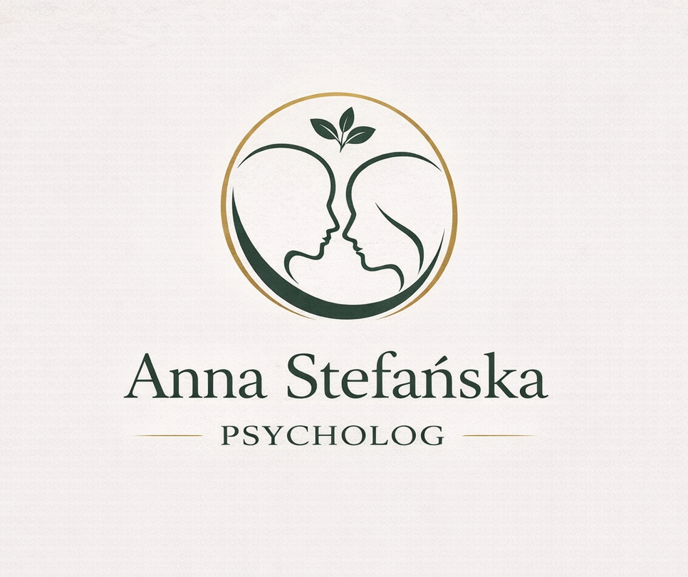

Każdy człowiek potrzebuje miejsca, w którym może bezpiecznie odnaleźć drogę do siebie.
Witaj w Przestrzeni Czułości. To miejsce stworzone z myślą o osobach, które pragną zatrzymać się, odnaleźć wewnętrzny spokój i z życzliwością spojrzeć na własną historię.
Witaj w Przestrzeni Czułości
Cieszę się, że tu jesteś
Niezależnie od tego, z czym dziś przychodzisz, wierzę, że każdy człowiek zasługuje na relację opartą na bezpieczeństwie, uważności i autentycznej obecności.
Przestrzeń Czułości powstała z myślą o osobach, które chcą lepiej zrozumieć siebie, odzyskać spokój i odnaleźć drogę do życia zgodnego z własnymi wartościami.
Poznaj ofertę